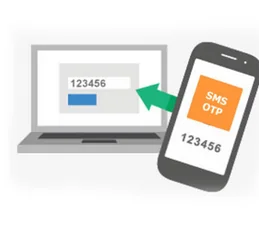
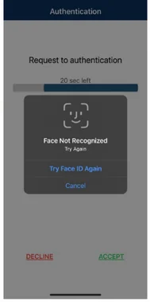
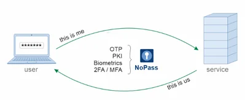
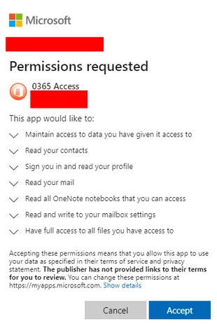

Few could have expected the gravity and wide-ranging effects the COVID-19 virus would have on the computing landscape. Millions upon millions of employees who were previously safely tucked away in their controlled workspaces were now working from home.
Many organizations that previously had no intentional of significantly expanding their remote workforces were thrust into implementing overarching infrastructure changes overnight. Outside of teleconferencing, virtual private networking (VPN) and perhaps remote desktop protocol (RDP) solutions were at the top of the list for immediate implementation.
Due to the urgency of the deployments, many of these implementations went live without the appropriate, or in some cases… any, security safeguards. These under-protected entry points into organizationally “protected” networks have been a prime target for unscrupulous actors. Compounding the concerns- As the days, weeks, and months passed, the restrictions ebbed and flowed allowing more flexibility for employees to journey farther and farther away from their homes.
Some made it to their apartment common areas while other began journeying to coffee shops and parks. The remote migration may have started with COVID, but a greatly expanded remote workforce is turning into a permanent fixture. With that being the case, organizations need permanent solutions in place.

he traditional method of protecting these capabilities generally relies solely on usernames and passwords. Likely, we can all agree the efficacy of this measure has been soundly shown to be inadequate. However, many organizations, thinking they are considerably bolstering security, will implement traditional MFA such as SMS based OTP.
While better than simply using username and password, SMS-OTP leaves a lot to be desired. Take a look at my previous post “How to Easily Hack SMS Based OTP?” for a break down of how easily this measure can be bypassed.
When we step back and examine the potential impact of compromise of an unfettered tunnel through a security perimeter; well, it can be a bit terrifying. It is a bit like the old movies where there are trenches, fences, and troops above ground, and the enemy sneaks right under them all. Fortunately, many organizations have implanted some degree of defense in depth, so they are not totally helpless. Still, bypassing major components of organizational security posture is never a good thing. It is difficult to bring up impact without discussing likelihood. The sky has a 1 in 10,000,000,000,000 chance of falling.
It may be better to spend organizational resources elsewhere, no matter how dire the impact. This is not the case here.
What is the likelihood of (a) remote employee stepping away from a laptop at a coffee shop? Notice the “a”, because it only takes one! What is the likelihood of a laptop getting stolen out of vehicle? What is the likelihood of that laptop having an easily guessed, or written down on a sticky attached to the laptop, password? What is the likelihood of a remote user getting phished for an OTP? Let us not beat the horse. There are dozens of examples of highly likely scenarios where compromise occurs, and it only takes once. The consequence of which is a tunnel through the defenses.
Another concern that is growing in frequency is consent phishing. Essentially, malicious apps and sites are set up to harvest OAuth tokens- OAuth tokens can be viewed as a short-lived one-time password (OTP). When used in the customary manner, attackers retrieve the token and then use the token to access another resource that the user has access to, and while attacks vary, according to Microsoft, at their core they usually revolve around the following modus operandi:
An attacker registers an app with an OAuth 2.0 provider, such as Azure Active Directory;
The app is configured in a way that makes it seem trustworthy, like using the name of a popular product used in the same ecosystem;
The attacker gets a link in front of users, which may be done through conventional email-based phishing, by compromising a non-malicious website, or other techniques;
The user clicks the link and is shown an authentic consent prompt asking them to grant the malicious app permissions to data;
If a user clicks accept, they will grant the app permissions to access sensitive data;
The app gets an authorization code which it redeems for an access token, and potentially a refresh token;
The access token is used to make API calls on behalf of the user.
These attacks have led to compromise of Office 365 accounts. Imagine a hacker having access to all your files, emails, corporate SharePoint data, etc. The hackers do not need to have the tunnel or end user device if they can access remote web services masquerading as an authentic user.
What is necessary to truly bolster the defenses? We need - warning super high speed military jargon- positive attribution. Specifically, access controls ensuring positive attribution. Some of you will know, but for those who do not: positive attribution is essentially the certainty the person really is the person and not someone claiming to be the person who is not the person OR succinctly ensure authenticity. Whether securing access to the end user device, securing access to the tunnel, or securing web accessible resources, if organizations can positively attribute the accessing user-then the bad guys lose.
Organizations could require the user to call in over Facetime, show their ID, and disclose to an admin the last six places they lived and their first girl/boyfriend’s favorite haircut every time they wanted to log in, but they would probably find another job- too much friction. We need a relatively simple method, while retaining a high level of assurance.
How do we do that?
At Identite, we solve the problem using biometrics and certificates in lieu of passwords, and we further increase security substantially, without increasing user friction, using our patented Full Duplex Authentication® (FDA).
Biometrics positively attribute a person to a certificate and then the certificate can positively attest the user’s identity to the service. With FDA we ensure mutual authentication. The user sends only ID attributes- the server then authenticates to the user before the user invokes their private key to complete the authentication process. The user device will only communicate with a “pre-paired” server. This eliminates the ability of a malicious third party obtaining an active token and masquerading as the authentic party. Problem solved.

We will examine two common scenarios where using NoPass prevents malicious activity.
Allyson, a remote worker, decides she is tired of being couped up in the house and decides to head over to Starbucks to finish off her workday. She orders a coffee and finds coveted chair next to the window. She logs into her laptop when she notices one of her of her colleagues sitting at a table outside.
Thinking she will only be a moment, Allyson heads outside to talk her colleague. They start discussing an important upcoming project and the quick chat turns into a lengthy conversation. During that time, a hacker quickly inserts a rubber ducky[1]to harvest Allyson’s local credentials and attempts to connect to her corporate share by accessing her VPN.

Luckily for Allyson and her employer, the rubber ducky hacking attempt was stifled because Allyson used NoPass Employee MFA to log into her laptop. Due to the decentralized nature of NoPass there were no passwords or password hashes on the device for the hacker to harvest. The hacker was likewise unsuccessful in his attempt to connect to Allyson’s corporate VPN because NoPass uses a biometrically protected certificate and FDA to for protection. Even if Allyson had forgotten her phone on the table with her laptop, no access would have been obtained.

Vic wants to test out a new web app for conducting customer surveys, so Viv goes to the Google machine and types in “customer survey apps”. Everything he sees is looking expensive, so he keeps digging. He makes his way to the 5th page of Google search results where he stumbles upon Survey Monky.

Having heard of Survey Monky and all the good features, he clicks the surveymonky.com. Once there, Vic sees the option of to incorporate the app with his Office 365 infrastructure. He clicks on the Survey Monky app and is presented with an OAuth Consent dialogue. Vic accepts the familiar permission request with out much thought. Unbeknownst to Vic, the site is actually malicious, and he has delivered the malicious entity the OAuth token they need to replay in order to gain access to Vic’s resources.
That would be the case if not for NoPass SSO. FDA ensures communication with only previously administratively paired servers. The token stores on either mobile or desktop client cannot be externally invoked.
The tokens will only be released to the NoPass server, and only after the NoPass server has first authenticated to either the mobile or desktop app. This mutual authentication ensures no rogue servers ever receive a token, and thereby are deft of the ammunition needed to cause harm.
While it may be easy to blame employees for being careless or attempt to ramp up the organizations training - people are people, let the technology do the job.
Our customers secure theirend user devices, tunnels, and web resources by implementing a combination of certificate and biometric based authentication based around user consent. By combining certificate-based authentication with biometrics the certainty that the authenticating party is who they say they are is essentially unequivocally assured, and by requiring consent in the form of a user action- presenting a biometric backed by full mutual authentication with FDA®, malicious actions have exceedingly few, if any, places to occur.
The technology is here, let’s help make the world, remote or otherwise, a safer place together!
[1] The Rubber Ducky uses keystroke injection technology to run malicious code quickly and easily on a device—serving as an unsuspecting way to steal passwords, drop malware, install “backdoors” into systems, exfiltrate data, and more.